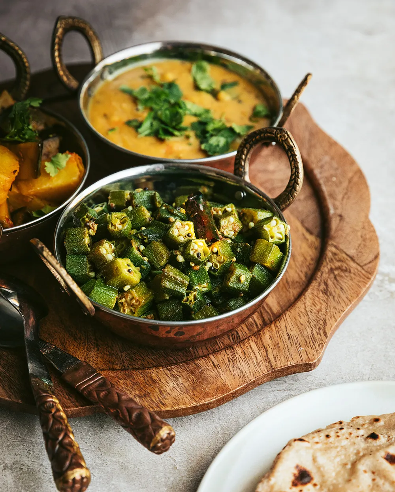

Bhinda
30 mins
Indian | Vegetarian
A traditional Indian dish made with okra and a blend of spices, cooked to perfection.
Serves 2 people
Ingredients
- Okra
- Red chili powder
- Kashmiri red chili powder
- Turmeric powder
- Coriander powder
- Cumin powder
- Garam masala
- Oil
- Salt to taste
Instructions
- Wash and cut okra half an inch
- In a pan, add three fari of oil
- Add the okra's
- Cover the pan with a dish and fill the dish with some water
- Let it cook for 3-5 minutes, mix and repeat until they are cooked
- Once the stickiness is almost gone add your spices Add red chili powder, turmeric powder, coriander powder, cumin powder, garam masala, Kashmiri red chili and salt
- Mix your Bhinda and cover the pan with the dish without water
- Put the stove on medium high
- Check and mix regularly for 2 min
- Cook until it is not sticky anymore and crunchy